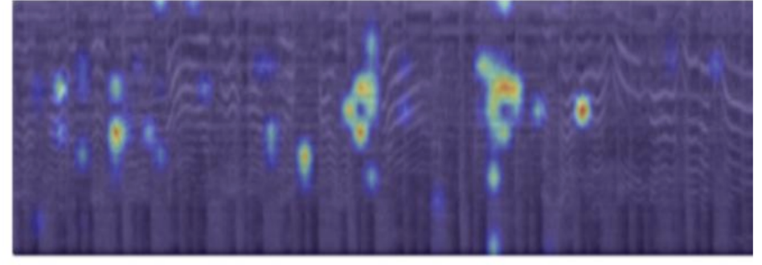
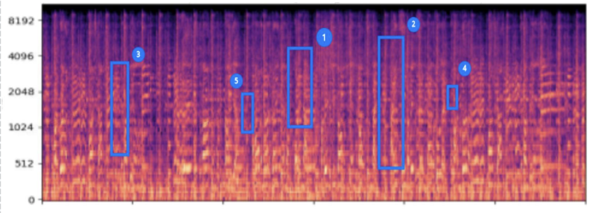
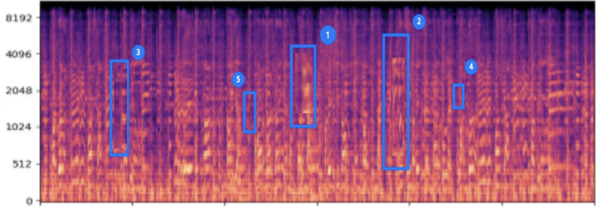

01
Locate model-critical regions
Identify the time-frequency regions that contribute most to the target model’s current decision, using gradient-based analysis or query-based coarse-to-fine localization.
Music Adversarial Inpainting Attack
Locate influential musical regions, regenerate only those regions, and evaluate security impact together with perceptual quality.
Research question
Rather than dispersing dense additive perturbations across the waveform, MAIA first identifies the musical regions that contribute most to the model’s current decision. It then uses surrounding musical context to regenerate only those bounded regions, with guidance from the attack objective. The central question is whether this localized, model-aware generative intervention can achieve an effective attack while preserving musical coherence and perceptual quality.
01
Identify the time-frequency regions that contribute most to the target model’s current decision, using gradient-based analysis or query-based coarse-to-fine localization.
02
Use a conditional music inpainting model to reconstruct only the selected regions from their surrounding context instead of perturbing the entire track.
03
Reduce confidence in the correct class while jointly evaluating attack effectiveness, musical coherence and perceptual quality.
Threat model
Grad-CAM localizes influential regions. Reconstruction and untargeted attack losses guide GACELA for at most 10 optimization iterations, with loss weights selected from {0.5, 1.0, 2.0}.
A 0.5-second coarse-to-fine masking procedure estimates region importance. CMA-ES then searches GACELA's latent space under a 1,000-query budget.
The paper evaluates cover-song identification with CoverHunter on SHS100K and music-genre classification with IDS-NMR on GTZAN.
Why local regeneration
MAIA does not edit the whole waveform. It first ranks influential regions, then constrains generative changes to a small set of selected intervals. This makes the intervention interpretable in time and gives the inpainting model surrounding context for musically plausible reconstruction.
A three-step importance-driven adversarial inpainting framework
Identify critical time-frequency regions that most influence the model's decision

Open either access setting when you want the computation, formula, and evidence boundary.
Grad-CAM is an existing localization method. MAIA’s contribution is not the invention of Grad-CAM, but its use within an importance-driven music inpainting attack pipeline.
This procedure does not require model parameters or gradients, but it does require prediction feedback from repeated model queries. The paper’s 1,000-query cap applies to the overall black-box attack, not to each localization round.
Select the highest-ranked regions for bounded generative modification
Rank candidate regions by model-derived importance and retain the top regions under the edit budget.
In the black-box setting, recursively split the highest-scoring coarse region to obtain finer localization.

Selected important segments for inpainting
Reconstruct selected segments with GACELA and task-specific adversarial guidance
GACELA does not generate an isolated segment from scratch. Its generator is conditioned on the audio surrounding the masked interval, allowing the regenerated gap to connect with the musical content before and after it. MAIA keeps the outside context unchanged and modifies only the selected region.
Only the selected interval is replaced; audio outside the mask comes directly from the original input.

Before Inpainting
After Inpainting
The paper figure illustrates context-conditioned local music reconstruction.
ℒrecKeeps the local reconstruction consistent with the musical context and perceptual quality.
ℒattackReduces confidence in the original correct label y for an untargeted attack.
λrec, λattControl the fidelity–attack trade-off; both are grid-searched over {0.5, 1.0, 2.0}.
IterationsThe white-box experiment performs at most 10 optimization iterations.
The mask confines the update to the selected region.
The pretrained GACELA model is used as a generative prior. MAIA iteratively updates the selected audio region and re-projects it through the inpainting process; it does not jointly retrain GACELA with the target MIR model.
Verified interactive sample
This interactive example isolates the generative inpainting component of MAIA. The displayed audio is produced by an actual music inpainting model at the selected regions. Paper-level attack performance is reported separately and is not inferred from this individual example.
The highlighted centers preserve the three region positions used by the earlier MAIA page. They are provenance-preserved interface metadata, not a new target-model localization run.
Each view uses the same 30-second time axis. GACELA's 32-frame checkpoint alignment is recorded in the manifest, and the original region centers are preserved.
All three sources share one timeline. Switching tracks preserves the current position; region looping constrains playback to the selected interval.
Generated offline with the stated model and served as a verified static artifact for reliable playback.
Aggregate paper results
These values are aggregate results from Table 1 of the paper. They are not predictions or metrics for the interactive sample above.
| Setting | Task | ASR | Post-attack score | FAD | LSD | MOS |
|---|---|---|---|---|---|---|
| MAIA-WB | CSI | 92.8% | mAP 0.488 | 11.25 | 1.58 | 4.0 |
| MAIA-WB | MGC | 93.5% | ACC 0.466 | 13.85 | 1.94 | 3.8 |
| MAIA-BB | CSI | 80.1% | mAP 0.594 | 12.56 | 1.90 | 3.6 |
| MAIA-BB | MGC | 77.9% | ACC 0.601 | 14.68 | 1.85 | 3.3 |
The paper studies two MIR tasks and two target system–dataset pairs; broader generalization requires additional targets and music domains.
White-box MAIA requires gradients and model access. Black-box MAIA relies on query feedback and uses up to 1,000 queries.
The paper evaluates ASR, post-attack mAP or accuracy, FAD using MERT-V0, LSD, and a five-point subjective listening study with 100 participants.
Evaluation roadmap
Mechanism-based hypotheses and an evaluation roadmap—not additional results reported by the MAIA paper.
| Property | Additive perturbation attacks | MAIA mechanism hypothesis | Evidence status |
|---|---|---|---|
| Cross-model transferability | Perturbations optimized for one source model may transfer when different models share similar decision boundaries, but transfer is not guaranteed. | MAIA’s localization and optimization are also source-model-aware. Local content-level regeneration may affect features shared by multiple models, but it may also overfit the source model’s important regions. | Open question—requires source-to-target transfer experiments. |
| Lossy transcoding and compression | Fine-grained, low-amplitude perturbations can be attenuated or distorted by MP3/AAC encoding, resampling, and bitrate changes. | Because MAIA replaces a local region with plausible generated musical content, its modification may be less dependent on exact waveform-level noise. This suggests possible persistence after transcoding, but it was not tested. | Hypothesis only—no codec-robustness result is reported. |
| Denoising and filtering | Noise-like components may be reduced by denoisers or frequency filtering, although adaptive attacks can be designed against a known defense. | Content-like inpainted segments may not be recognized as noise by a denoiser, but denoising can still alter generated details and reduce attack effectiveness. | Open question—requires post-denoising attack evaluation. |
| Temporal and playback transformations | Cropping, time shifting, resampling, loudness normalization, or playback-recording can disrupt perturbations that depend on precise alignment. | MAIA modifies bounded musical content, but its importance mask and target-model effect may still depend on timing and alignment. | Not established by the current experiments. |
Craft attacks on one MIR model and evaluate them directly on different architectures and training datasets without re-optimizing the adversarial sample.
Evaluate MP3/AAC transcoding at multiple bitrates, resampling, denoising, filtering, loudness normalization, time shifting, and playback-recording transformations.
Measure post-transformation attack success, confidence change, perceptual distance, and listening quality instead of reporting attack success alone.
MAIA demonstrates a stronger attack–quality trade-off than the evaluated PGD, C&W, NES, and ZOO baselines in the paper’s original settings. Whether this advantage extends to cross-model transfer or real audio-processing pipelines remains an empirical question.
Methodological bridge
A methodological transfer, not an experimental result of MAIA.
MAIA does not directly solve prompt injection, jailbreak, tool authorization, or trusted execution. The bridge identifies a transferable evaluation methodology: locate influential inputs, apply bounded counterfactual changes, and jointly measure attack effectiveness and utility preservation.
Paper and resources
The official English title is retained in the formal citation.
@inproceedings{liu2025maia,
title={MAIA: An Inpainting-Based Approach for Music Adversarial Attacks},
author={Liu, Yuxuan and Zhang, Peihong and Sang, Rui and Li, Zhixin and Li, Shengchen},
booktitle={Proceedings of the 26th International Society for Music Information Retrieval Conference},
year={2025}
}